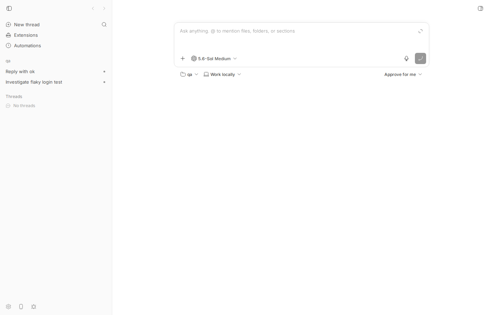

#1648 · bb thread list prints ids but no titles
TL;DR
Plain-language framing. bb thread list is the CLI command that prints a table of threads (agent conversations). Every thread record the server returns carries a title (set by the user, or generated by the agent after the first turn) and a titleFallback (derived from the first prompt). The desktop/web sidebar and bb thread show both display that title. The human-readable table printed by bb thread list does not: it prints exactly three columns, ID, Project, Status.
This is not a data or transport bug. The server's GET /api/v1/threads response (which bb thread list --json dumps verbatim) contains title and titleFallback for every row; the CLI simply never puts them in the table. The whole behaviour is in one function, printThreadTable in apps/cli/src/commands/thread/list.ts, whose row mapper selects [id, projectId, status] and whose header is hardcoded to ["ID", "Project", "Status"]. That code has been unchanged since it was written for v0.37.0 (the version the reporter used) and is still identical on origin/main today, so the issue is present at the base commit and not fixed upstream. I reproduced it live on a dev instance built from 16ceb3a54 and with a unit test that fails on the base commit; a small change to list.ts (Title column with title ?? titleFallback ?? "-", truncated) makes both pass. #1760 is a closed duplicate of this issue.
Claims vs findings
| Claim | Status | Evidence |
|---|---|---|
bb thread list emits three columns ID, Project, Status and no title | Verified | Live output below (thread-list-plain.txt) and printThreadTable in apps/cli/src/commands/thread/list.ts lines 69–89 (header ["ID", "Project", "Status"]). |
Threads have titles; bb thread list --json includes them | Verified | thread-list-json.txt: both rows carry title and titleFallback. Schema: threadSchema.title / titleFallback in packages/domain/src/thread.ts L380–381. |
| The desktop UI shows titles | Verified | Web app sidebar screenshot assets/1648-app-thread-titles.png shows "Reply with ok" and "Investigate flaky login test" for the same two threads. bb thread show <id> also prints Title:. |
| Reproduced on bb 0.37.0 | Verified (still present at HEAD) | git show desktop-v0.37.0:apps/cli/src/commands/thread/list.ts has the identical printThreadTable; git log 16ceb3a54..origin/main -- apps/cli/src/commands/thread/list.ts is empty (no fix upstream). Base 16ceb3a54 reports --version 0.38.0. |
Anything reporting on threads must shell out to --json and format by hand | Verified as consequence | Only --json exposes the title today; there is no title flag or column (bb thread list --help). |
{kind=link}
Environment
- bb
16ceb3a54(main, 2026-08-18) checked out in worktree/home/USER/projects/bb/.claude/worktrees/wf_242c3e11-a10-41; CLI--versionreports 0.38.0. - Linux 7.0.0-29-generic (host "HOST"), node v24.18.0, pnpm + turbo build (
pnpm exec turbo run build), codex-cli 0.147.0 (providercodex, model gpt-5.6-sol). - Dev instance from
scripts/bb-dev-app current: apphttp://localhost:11590, serverhttp://localhost:19590, host daemon127.0.0.1:27590, data dir/home/USER/.bb-dev/projects-bb-.claude-worktrees-wf_242c3e11-a10-41-e7e7324ed79b, hosthost_8rkswj4jyu. - Scratch project
proj_bsst4jxfwv("qa", local path/tmp/bb-1648-qa), threadsthr_a9niqhjj9c(explicit--title) andthr_uwfzqywzsz(title generated by the agent). - Gotcha: when running from inside a bb agent thread,
BB_CLIis set and the CLI entry re-execs the daemon-managed binary (apps/cli/src/bb-cli-reexec.ts). To exercise the worktree build I ranunset BB_CLIbeforenode apps/cli/dist/index.js ….
Minimal reproduction
- Build and start a dev instance:
pnpm install --frozen-lockfile --prefer-offline && pnpm exec turbo run build && scripts/bb-dev-app current. Export the printed env:eval "$(scripts/bb-dev-app env)"andunset BB_CLI. - Create a project:
mkdir -p /tmp/bb-1648-qa && git -C /tmp/bb-1648-qa init -q, thencurl -s -X POST $BB_SERVER_URL/api/v1/projects -H 'content-type: application/json' -d '{"name":"qa","source":{"type":"local_path","path":"/tmp/bb-1648-qa","hostId":"<host id from bb machine list>"}}'. Note the returned project id. - Spawn two tiny threads, one with an explicit title and one without (the agent titles it after the turn):
$ node apps/cli/dist/index.js thread spawn --project proj_bsst4jxfwv --provider codex --title "Investigate flaky login test" --prompt "Reply only with ok." Thread spawned: thr_a9niqhjj9c $ node apps/cli/dist/index.js thread spawn --project proj_bsst4jxfwv --provider codex --prompt "Reply only with ok. This is the second QA thread." Thread spawned: thr_uwfzqywzsz
- Wait ~30 s for the turns to finish, then list threads. Expected: a column that identifies each thread by name. Actual (
thread-list-plain.txt):$ node apps/cli/dist/index.js thread list ID Project Status -------------- --------------- ------------ thr_uwfzqywzsz proj_bsst4jxfwv idle -------------- --------------- ------------ thr_a9niqhjj9c proj_bsst4jxfwv idle
- The same call with
--jsonshows the titles are in the payload the table is rendered from (full JSON, summarised):$ node apps/cli/dist/index.js thread list --json | node -e '…pick id,projectId,status,title,titleFallback…' {"id":"thr_uwfzqywzsz","projectId":"proj_bsst4jxfwv","status":"idle","title":"Reply with ok","titleFallback":"Reply only with ok. This is the second QA thread."} {"id":"thr_a9niqhjj9c","projectId":"proj_bsst4jxfwv","status":"idle","title":"Investigate flaky login test","titleFallback":"Reply only with ok."}

http://localhost:11590/projects/proj_bsst4jxfwv) at the same moment: the sidebar under project "qa" lists the two threads by title, "Reply with ok" and "Investigate flaky login test". The CLI table above shows only their ids.Unit-level repro (fails on base commit)
File: 1648/repro/thread-list-title-repro.test.ts. Copy it to apps/cli/src/__tests__/command-output/ and run cd apps/cli && pnpm exec vitest run src/__tests__/command-output/thread-list-title-repro.test.ts. It stubs GET v1/threads with two threads (one titled, one fallback-only) via the existing command-output harness and asserts the table has a Title header and the title text. On 16ceb3a54 the first assertion fails (vitest-base-fail.log):
AssertionError: expected '\nID Project St…' to match /^ID\s+.*Title/m - Expected: /^ID\s+.*Title/m + Received: " ID Project Status -------------- --------------- ------------ thr_a9niqhjj9c proj_bsst4jxfwv idle -------------- --------------- ------------ thr_uwfzqywzsz proj_bsst4jxfwv idle " ❯ src/__tests__/command-output/thread-list-title-repro.test.ts:49:20
// Repro for get-bb/bb#1648: `bb thread list` prints ID/Project/Status but no
// thread title, even though the server returns `title` / `titleFallback`.
import { describe, expect, it, vi } from "vitest";
import {
setupCommandOutputTestEnvironment,
collectLogPayloads,
runCommand,
stubServerApi,
} from "../helpers/command-output-harness.js";
import type { CommandRegistrar } from "../helpers/command-output-harness.js";
import * as fixtures from "../helpers/command-output-fixtures.js";
import { registerThreadCommands } from "../../commands/thread/index.js";
describe("issue #1648: bb thread list shows thread titles", () => {
setupCommandOutputTestEnvironment();
const register: CommandRegistrar = (program) =>
registerThreadCommands(program, () => "http://server");
it("prints the thread title (or fallback) in the human-readable table", async () => {
const list = vi.fn(async () => [
fixtures.makeThread({
id: "thr_a9niqhjj9c",
projectId: "proj_bsst4jxfwv",
providerId: "codex",
status: "idle",
title: "Investigate flaky login test",
titleFallback: "Reply only with ok.",
createdAt: 1,
updatedAt: 1,
}),
fixtures.makeThread({
id: "thr_uwfzqywzsz",
projectId: "proj_bsst4jxfwv",
providerId: "codex",
status: "idle",
title: null,
titleFallback: "Reply only with ok. This is the second QA thread.",
createdAt: 1,
updatedAt: 1,
}),
]);
stubServerApi({ "v1.threads.$get": list });
await runCommand(["thread", "list"], register);
const output = collectLogPayloads(vi.mocked(console.log)).join("\n");
// The header should advertise a Title column ...
expect(output).toMatch(/^ID\s+.*Title/m);
// ... and each row should carry the user-visible title.
expect(output).toContain("Investigate flaky login test");
// Threads with no explicit title still have a server-provided fallback.
expect(output).toContain(
"Reply only with ok. This is the second QA thread.",
);
});
});
Root cause
The CLI receives full Thread objects from sdk.threads.list(...) and, when --json is not given, hands them to printThreadTable. That function chooses which fields become columns, and it never reads title or titleFallback:
apps/cli/src/commands/thread/list.ts#L69-L89
function printThreadTable(threads: Thread[]): void {
const rows = threads.map((thread) => [
thread.id,
thread.projectId === PERSONAL_PROJECT_ID ? "-" : thread.projectId,
formatThreadListStatus(thread),
]);
const idWidth = Math.max(4, ...rows.map((row) => row[0].length));
const projectWidth = Math.max(7, ...rows.map((row) => row[1].length));
const statusWidth = Math.max(12, ...rows.map((row) => row[2].length));
const table = renderBorderlessTable(
{
head: ["ID", "Project", "Status"],
colWidths: [idWidth, projectWidth, statusWidth],
},
rows,
);
The data is available at that point: the domain contract (packages/domain/src/thread.ts#L375-L382) declares title: z.string().nullable() and titleFallback: z.string().nullable(), and the list route returns ThreadListEntry objects that extend it. Other CLI surfaces already use these fields: bb thread show prints Title: (show.ts#L512-L514) and bb thread delete confirms with thread.title ?? thread.titleFallback ?? thread.id (actions.ts#L347). The app resolves a display title with the same precedence plus a Thread <id8> fallback (apps/app/src/lib/thread-title.ts). So the visible symptom (ids-only table) follows directly from the column selection in printThreadTable; nothing on the server or daemon side is involved.
History: git log shows this function was last touched in #823 / #668 / #638 and is byte-identical at tag desktop-v0.37.0 (the reporter's version) and on origin/main after the base commit, so this is a long-standing omission rather than a regression, and it is not already fixed.
Side observation (not part of the issue): the shared renderBorderlessTable (cli-table3 with mid: "-") draws a dashed separator between every row, not just under the header, so multi-row tables come out with a rule between each thread (visible in the output above). The existing tests only cover single-row tables so this never shows up in them.
Proposed fix (first principles)
Add a Title column to printThreadTable in apps/cli/src/commands/thread/list.ts, resolved as title → titleFallback → "-", collapsed to one line and truncated (e.g. 60 chars with an ellipsis) so long fallback prompts do not blow the table width. Keep Project (the reporter's alternative of dropping it would silently change existing output for scripts that parse it, and the personal-project - convention is used elsewhere); the column order ID, Title, Project, Status keeps the id first for copy/paste. Prototype diff, applied and verified in my worktree: 1648/repro/proposed-fix.diff. Live output with the fix (thread-list-plain-with-fix.txt):
ID Title Project Status -------------- ---------------------------- --------------- ------------ thr_uwfzqywzsz Reply with ok proj_bsst4jxfwv idle -------------- ---------------------------- --------------- ------------ thr_a9niqhjj9c Investigate flaky login test proj_bsst4jxfwv idle
With the diff applied the repro test passes; the two exact-string tests in apps/cli/src/__tests__/command-output/thread-list.test.ts ("renders archived status…", "renders personal project…") fail only because they hardcode the three-column layout and need their expected strings updated to include the Title column (- when both title fields are null). What could go wrong: (1) any human-output scraper that indexes columns positionally will shift — --json is the stable contract, so this is acceptable but worth a changelog line; (2) cli-table3 measures width with string-width, so an East-Asian/emoji title still aligns, but the naive slice truncation could split a surrogate pair — use Array.from(str) if that matters; (3) per AGENTS.md "CLI, Guide, And Skill", the guide template packages/templates/src/templates/bb-guide-threads.md only lists the command without describing its columns, so no doc change is strictly required, but a note that the table shows titles would help agents. Optionally also resolve projectId to the project name as #1760 suggests; that needs a second request (projects.list) and is a separate, larger change.
PR review
No open PRs are linked to this issue (searched gh pr list --search "thread list title"; nothing relevant).
Related issues
- #1760 "bb thread list prints two opaque ids and a status, but --json already has the title" — closed as a duplicate of this issue; additionally asks to resolve the project id to its name.
- #1768 — another CLI discoverability gap in thread commands (
bb thread logwindowing / search), same theme of the human-readable CLI hiding data the JSON exposes.
Appendix
Commands run
git fetch origin main; git checkout 16ceb3a54
pnpm install --frozen-lockfile --prefer-offline
pnpm exec turbo run build
scripts/bb-dev-app current # app :11590, server :19590, daemon :27590
export BB_SERVER_URL=http://localhost:19590 BB_HOST_DAEMON_PORT=27590 BB_PROJECT_ID=proj_personal; unset BB_CLI
pnpm bb:dev machine list # host_8rkswj4jyu "HOST" connected
mkdir -p /tmp/bb-1648-qa && git -C /tmp/bb-1648-qa init -q
curl -s -X POST $BB_SERVER_URL/api/v1/projects -H 'content-type: application/json' \
-d '{"name":"qa","source":{"type":"local_path","path":"/tmp/bb-1648-qa","hostId":"host_8rkswj4jyu"}}' # proj_bsst4jxfwv
node packages/scripts/dist/commands/run-cli.js thread spawn --project proj_bsst4jxfwv --provider codex --title "Investigate flaky login test" --prompt "Reply only with ok."
node packages/scripts/dist/commands/run-cli.js thread spawn --project proj_bsst4jxfwv --provider codex --prompt "Reply only with ok. This is the second QA thread."
node apps/cli/dist/index.js thread list # -> 1648/repro/thread-list-plain.txt
node apps/cli/dist/index.js thread list --json # -> 1648/repro/thread-list-json.txt
node apps/cli/dist/index.js thread show thr_a9niqhjj9c # prints "Title: Investigate flaky login test"
cd apps/cli && NO_COLOR=1 pnpm exec vitest run src/__tests__/command-output/thread-list-title-repro.test.ts # FAILS on base
# apply 1648/repro/proposed-fix.diff, then:
pnpm exec turbo run build --filter=@bb/cli --force
node apps/cli/dist/index.js thread list # -> 1648/repro/thread-list-plain-with-fix.txt (Title column present)
cd apps/cli && pnpm exec vitest run src/__tests__/command-output/thread-list-title-repro.test.ts src/__tests__/command-output/thread-list.test.ts # repro passes; 2 exact-string layout tests need updating
dev-browser --browser bb1648 --headless run 1648/repro/screenshot-app.js # -> assets/1648-app-thread-titles.png
pnpm dev:stop
bb thread show for the titled thread (base commit)
Thread: thr_a9niqhjj9c Status: idle Title: Investigate flaky login test Project: proj_bsst4jxfwv Environment: Working locally (env_bxcdrv3rx8)
Artifacts
thread-list-plain.txt— base-commit CLI outputthread-list-json.txt,thread-list-json-summary.txt—--jsonoutput showing titlesthread-list-title-repro.test.ts,vitest-base-fail.log— failing unit reproproposed-fix.diff,thread-list-plain-with-fix.txt— prototype fix and its outputscreenshot-app.js— dev-browser script for the sidebar screenshot